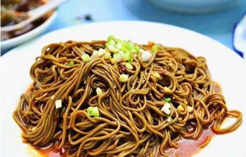
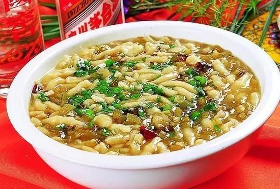
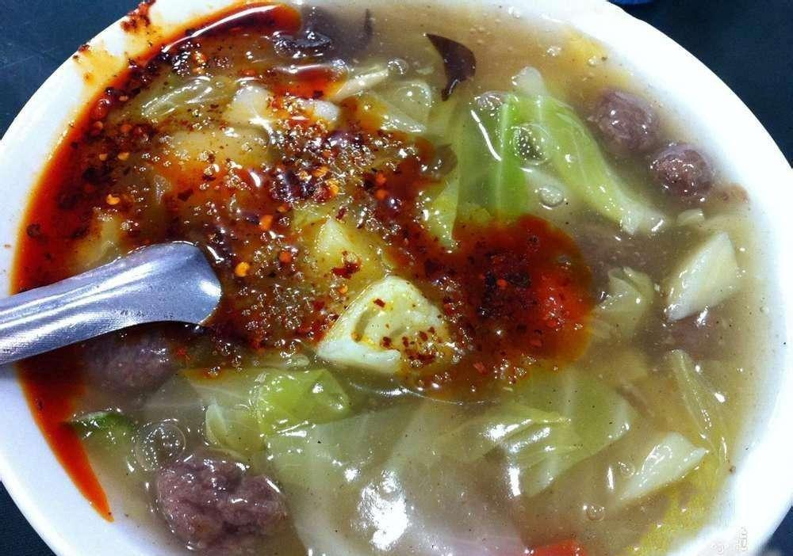

制作时选用新鲜荞麦现磨现做，夏可凉食，冬可加羊肉臊子热吃。
特点是清香利口、条细筋韧。当地人戏称：” 荞面饸饹黑是黑，筋韧爽口能待客."
这是陕西关中一带对传统风味小吃荞面饸饹的赞语。

也是西府（今陕西省宝鸡市）名小吃。
陕西省臊子面历史悠久，尤以宝鸡市岐山县的岐山臊子面最为正宗。
而岐山臊子面以薄、筋、光、煎、稀、汪、酸、辣、香而著名。
浆水鱼鱼一般有两种：玉米面和一般白面的，可热吃也可放凉吃，味道十分鲜美。

肉丸胡辣汤源自西安，简单的可以说是蔬菜牛肉丸子汤，或者说是牛肉丸烩菜，但是区别于外地的是汤要勾芡。
汤里有浑圆的牛肉丸子，切成块状 的土豆、莲花白、胡萝卜、菜花、芹菜等。
先用牛羊骨熬汤，下牛肉丸，烩菜，最后勾芡而成。说起容易，但是要做到菜不煮烂，适合可口可是有功夫的。
吃前浇一勺店家精心熬制的红艳艳的辣椒油，吃罢舌尖发麻（花椒惹得祸），微微冒汗，浑身舒坦。
肉丸糊辣汤另有一个雅致的名字叫八珍汤，叫八珍自然夸张，不过这也说明糊辣汤“内容”很多。最受西安人欢迎的早餐之一。
